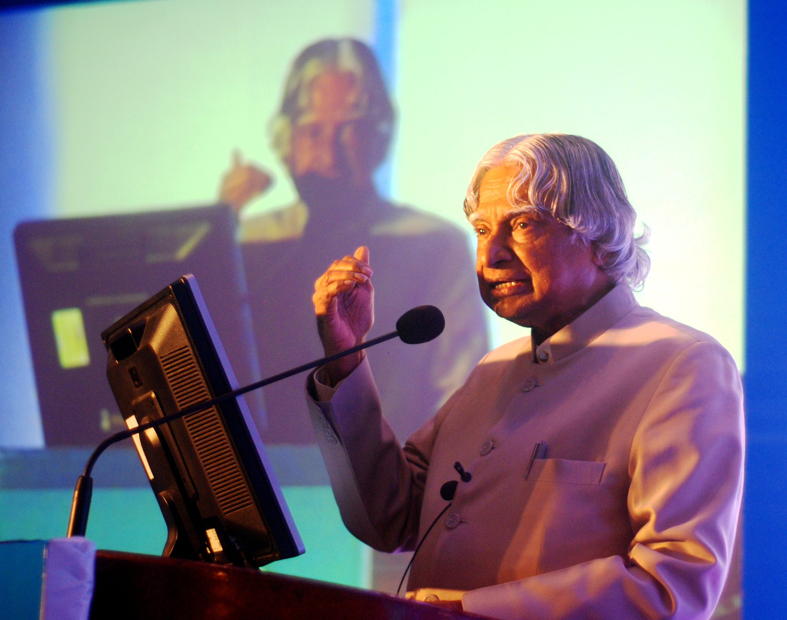

The Scientist
He championed home-grown technology in space and defence, proving that India could design and build its own systems.
A tribute to
The newspaper boy from Rameswaram who taught a nation to look up.
1931 – 2015
Read his story
kalam.jpg)Avul Pakir Jainulabdeen Abdul Kalam grew up in a modest family in Rameswaram, Tamil Nadu. As a boy he delivered newspapers to help at home and studied by lamplight. Watching birds in flight sparked a curiosity about aeronautics long before he knew it could be a career.
After training as an aerospace engineer, he spent decades at India's defence and space organisations. He led the team behind the country's first indigenous satellite launch vehicle and later guided missile programmes that earned him the nickname "Missile Man". For him, engineering was a way to make a country self-reliant.
In 2002 he became India's eleventh President. He stayed close to students, often turning official visits into classroom conversations. Many remember him less for his offices than for how he made young people feel their ideas were worth building.
He died on 27 July 2015 while giving a lecture, doing what he loved most. His books, especially Wings of Fire, still show new generations that a modest start does not limit how far you can go.
Born on 15 October in Rameswaram, Tamil Nadu.
Graduates in aeronautical engineering from MIT, Chennai and joins DRDO.
Moves to ISRO to work on satellite launch vehicles.
SLV-III places the Rohini satellite in orbit under his project leadership.
Receives the Bharat Ratna, India's highest civilian honour.
Elected the 11th President of India.
Passes away in Shillong while lecturing students at IIM Shillong.
He championed home-grown technology in space and defence, proving that India could design and build its own systems.
Even as President, he returned to classrooms. He believed teaching was the most lasting contribution a person could make.
He asked young people to set big goals and work steadily towards them, long before success was guaranteed.
Thinking is the capital,enterprise is the way,hard work is the solution.
A. P. J. Abdul Kalam